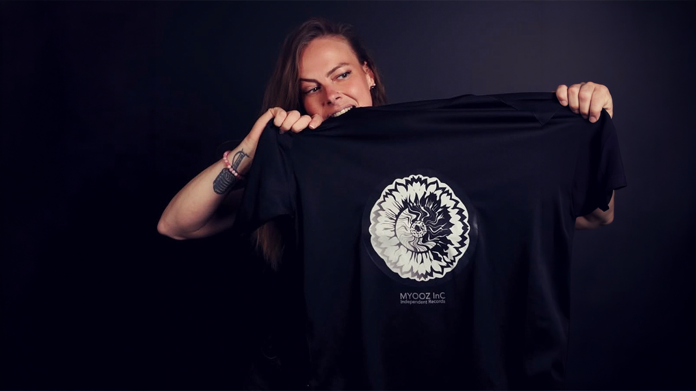

Rasta Mia
Cantautora · Francia
Cantautora del Norte de Francia:
"Je suis une artiste passionnée, j'aime découvrir de nouveaux styles, à chanter, à danser, à écrire...
Je peux passer du mélancolique au dancehall, latino, pop, rock, deephouse, reggae, rap, trap, musique consciente, chanson d'amour, psycho...
Si l'inspiration me vient, je la saisie et le caméléon entre en action.
J'aime travailler avec mes nombreux collaborateurs et amis... Et collaborateurs devenus amis. Qui viennent pour beaucoup d'Amérique Latine (Venezuela, Chili, Sao Polo, Bresil, Mexique, Colombie...) Mais aussi d'Allemagne, Belgique, Espagne, Russie, Turquie, Togo, Benin, Congo....
J'ai mon propre univers et je m'inspire de mon vécu, mes émotions, mon imagination, mais aussi tout ce qui m'entour... J'espère vous avoir conquis par mes mots et que ma musique séduira vos oreilles."
"Je suis une artiste passionnée, j'aime découvrir de nouveaux styles, à chanter, à danser, à écrire...
Je peux passer du mélancolique au dancehall, latino, pop, rock, deephouse, reggae, rap, trap, musique consciente, chanson d'amour, psycho...
Si l'inspiration me vient, je la saisie et le caméléon entre en action.
J'aime travailler avec mes nombreux collaborateurs et amis... Et collaborateurs devenus amis. Qui viennent pour beaucoup d'Amérique Latine (Venezuela, Chili, Sao Polo, Bresil, Mexique, Colombie...) Mais aussi d'Allemagne, Belgique, Espagne, Russie, Turquie, Togo, Benin, Congo....
J'ai mon propre univers et je m'inspire de mon vécu, mes émotions, mon imagination, mais aussi tout ce qui m'entour... J'espère vous avoir conquis par mes mots et que ma musique séduira vos oreilles."